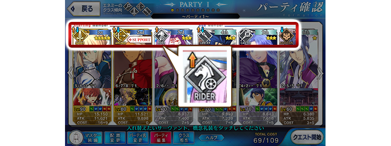
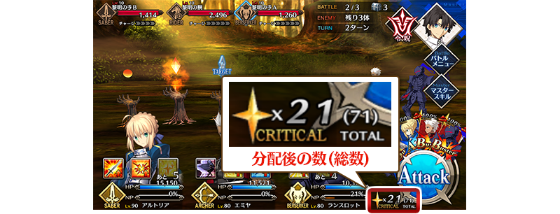
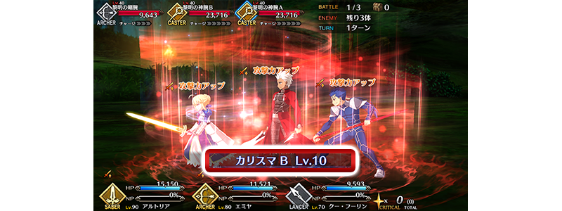
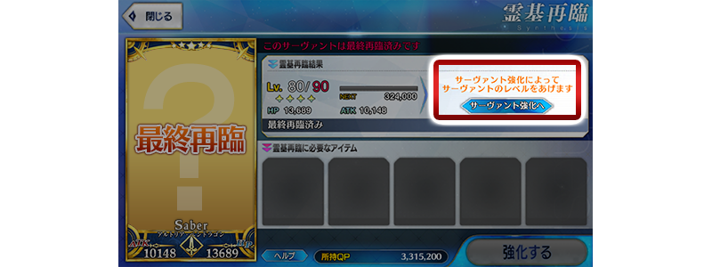

- 11/19
- 【來自迦勒底廣報局】關於11月的遊戲更新
非常感謝各位使用「Fate/Grand Order」。
來自迦勒底廣報局，告知關於預定2018年11月的下次遊戲更新。
以下介紹更新後反映的更新內容中，具有代表性的更新內容。
①追加表示對上對象關卡的職階相性圖示
在關卡開始前的支援選擇畫面、隊伍確認畫面、Servant選擇畫面中，對每位Servant顯示對上選擇關卡「敵人的職階傾向」的職階相性。

※開發中畫面。
②追加顯示持有的Critical星星總數
在戰鬥畫面中，改為顯示持有的Critical星星總數。總數包含分配到指令卡的Critical星星數。

※開發中畫面。
③追加技能的等級記載
在使用技能時，追加使用可確認技能等級的記載。

※開發中畫面。
④在Servant最終再臨時，追加可移動到強化畫面的按鈕
>在Servant最終再臨時，追加可移動到Servant強化畫面的按鈕。

※開發中畫面。
以上為預定2018年11月實施的下次遊戲更新主要內容。
另外今後，也預定在期間限定活動和期間限定宣傳活動中，會有將通過主線關卡第1部設為開放條件的情況。
無論如何，如果推進主線關卡第1部的攻略會有所幫助。
今後也請多多指教「Fate/Grand Order」。